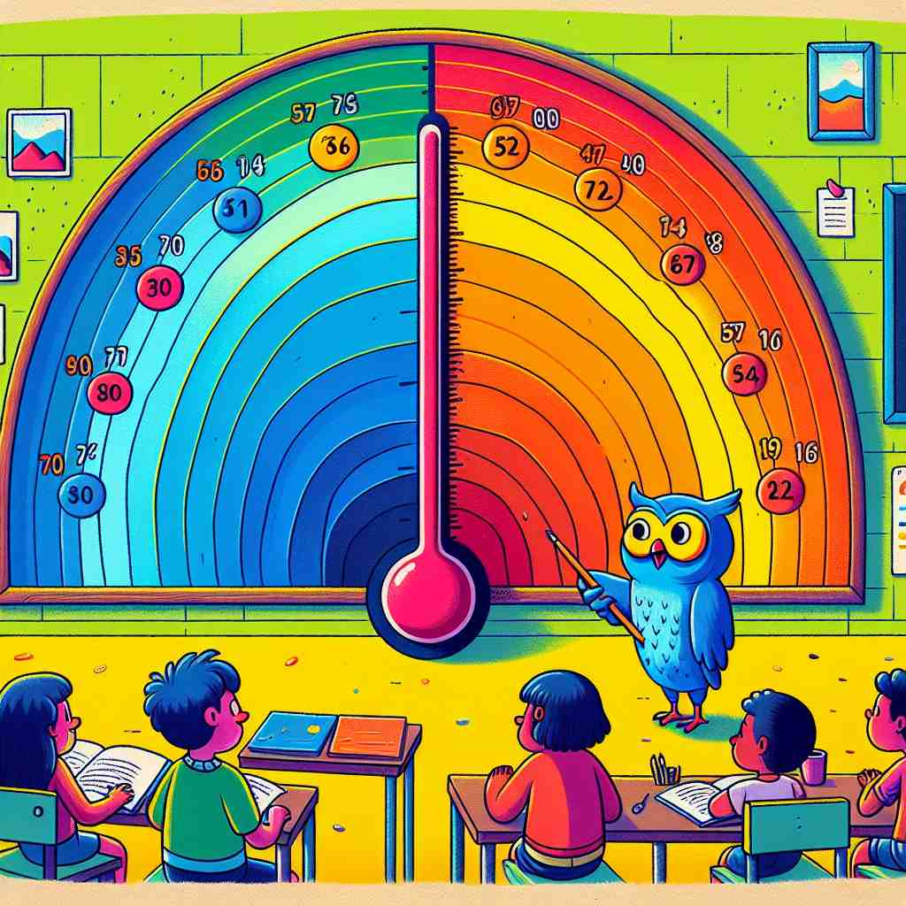
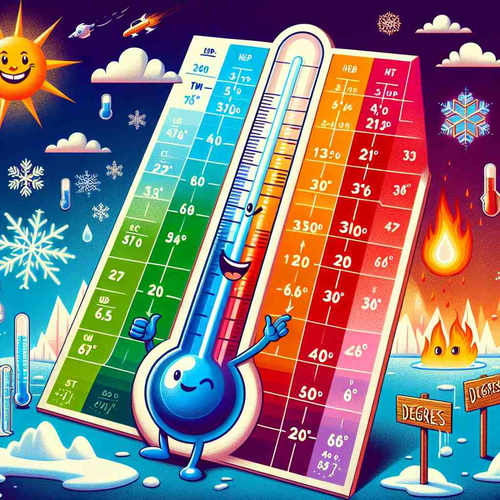

🗝️ n. a unit for measuring amount or level
🖼️ 在一个天气预报节目中，主持人指着显示屏上的温度图说：'今天的气温是20度。' 此时，图上温度计的刻度也指向20，明确展示了'degree'作为测量量级单位的含义。
🔍 想象一个刻度尺，上面标记着不同的'度'（degree）。这个核心概念可以帮助你理解degree在各种语境中的用法。无论是温度、角度、学位还是程度，都可以看作是在这个刻度尺上的不同标记。这种统一的视觉形象有助于你更好地记忆和理解degree的多重含义。

💬 The degree of temperature today is very high, making it perfect for ice cream.
💬 The chef adjusts the stove for a high degree of heat to cook the pasta.

💬 The students learn about the degree of temperature on the scale.

💬 The thermometer shows the temperature degree outside.
🔗 1. degrade: 降低 2. gradual: 逐步的 3. gradient: 坡度
🗝️ n. a stage in a scale or series
🖼️ 在一个舞蹈比赛中，评委们按参赛者的表演质量评分。当一位选手完成表演后，评委举牌打出8度分数，表示他在10个等级中的第8级，这体现了'degree'作为阶段或级别的意义。
💬 They disagree to some degree on this issue.
❓ 从测量单位延伸到表示级别或程度
🗝️ n. an academic title given by a university
🖼️ 在大学毕业典礼的舞台上，一位刚毕业的学生从校长手中接过学位证书，校长祝贺道：'恭喜你获得了学士学位。' 这个场景展示了'degree'作为大学授予的学术头衔的含义。
💬 She has a degree in economics from Harvard.
❓ 表示学术成就的级别
🗝️ n. the amount that something turns or moves
🖼️ 在一个科学实验室里，研究人员正在调试设备，其中一个旋钮需要精确转动45度，以便准确对齐传感器。这展示了'degree'用于描述转动或移动的量度。
💬 The wheel turned 180 degrees.
❓ 在几何学中表示角度的单位
🗝️ n. the extent or intensity of something
🖼️ 在一个音乐会现场，音响师正在调整音量，他对助手说：'我们需要将音量提高到某个程度，确保观众能清晰听到音乐。' 这体现了'degree'作为描述程度或强度的意义。
💬 His degree of commitment to the project is impressive.
❓ 从测量单位延伸到表示程度或强度
🗝️ n. a level of complexity in mathematics
🖼️ 在数学课上，老师正在讲解一个复杂方程，她说道：'这个方程的最高次幂是2，所以它是二次方程。' 这里，'degree'被用来表示数学中的复杂程度。
💬 This is a quadratic equation of the second degree.
❓ 在数学中表示方程式或多项式的复杂程度